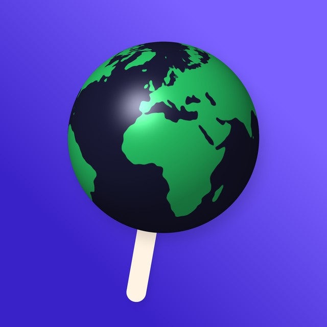
I1Le carton levéCoup de cœur
Le monde levé comme un carton de vote : la planète dit son avis.
Take pose une question à la planète entière, et elle répond : oui, non, une note. Le logo actuel, une sphère en points, fait penser à une app de son. Ces pistes remettent la planète au centre, sans un mot, et lui font faire un geste : lever un carton, se plier en deux, appuyer sur un bouton.


Dix pistes en couleur. Chaque icône est montrée en grand, puis à 60, 40 et 20 px, les tailles réelles sur un téléphone.

Le monde levé comme un carton de vote : la planète dit son avis.
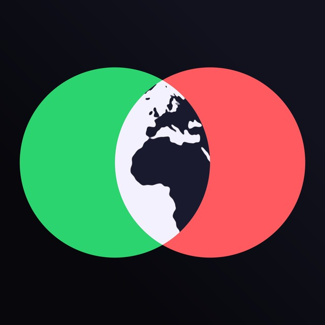
Un cercle vert, un cercle rouge ; là où ils se croisent, il y a le monde. Take, c'est l'endroit où les avis se rencontrent.
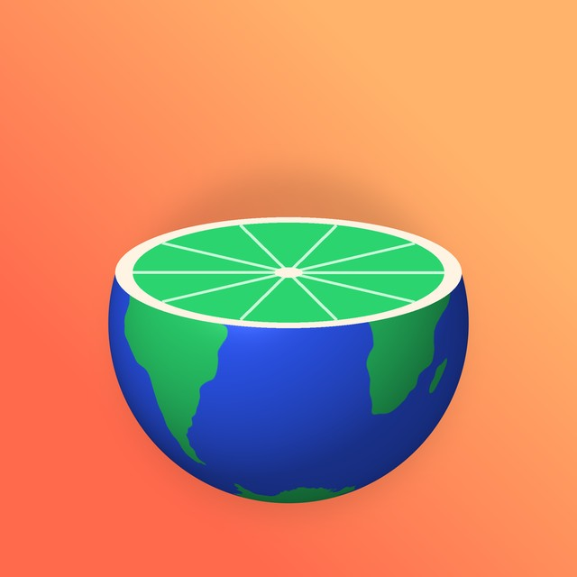
La Terre coupée comme un agrume : prends ta part du monde.
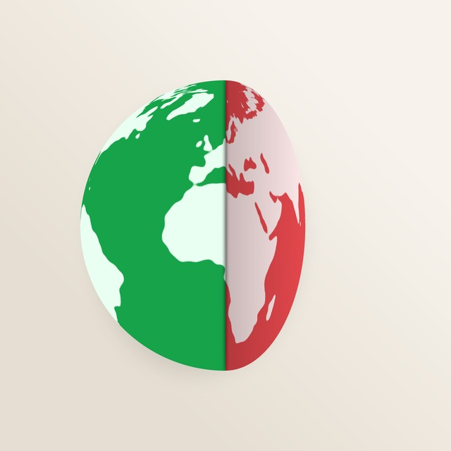
Une question plie le monde : une moitié verte, une moitié rouge.
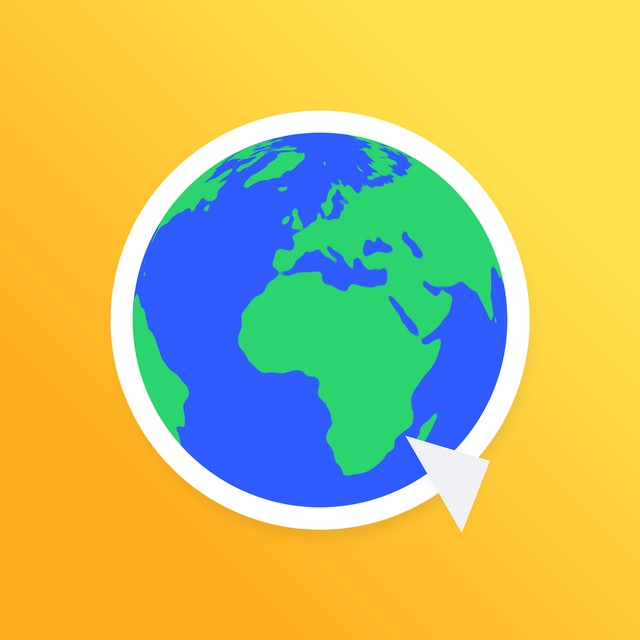
Le monde en sticker qu'on colle partout : social, léger, à partager.
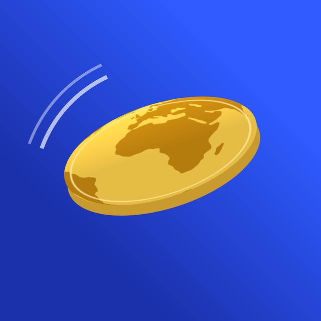
La Terre en pièce qu'on lance : choisis ton côté.
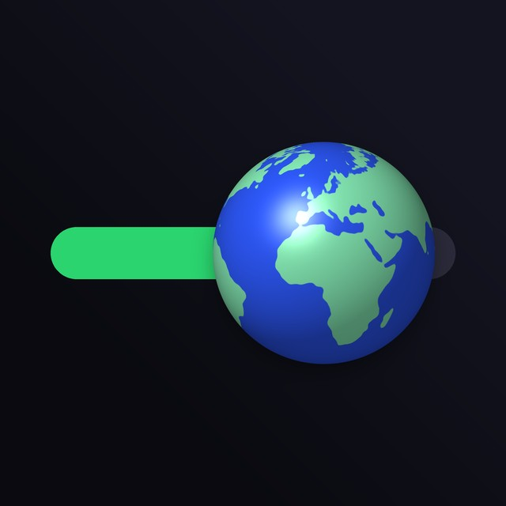
La planète est le bouton du curseur d'avis : glisse, note, décide.
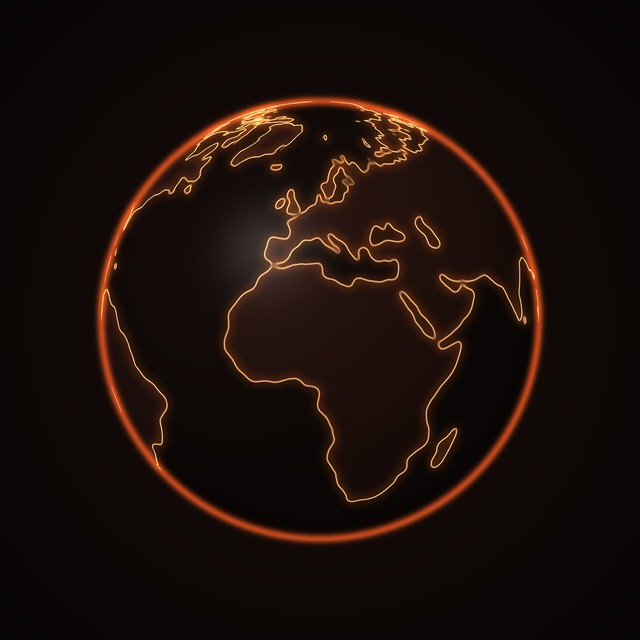
Les côtes du monde brûlent : l'avis qui chauffe.
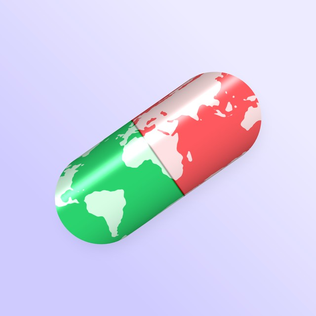
Une pilule mi-verte mi-rouge avec le monde imprimé dessus.
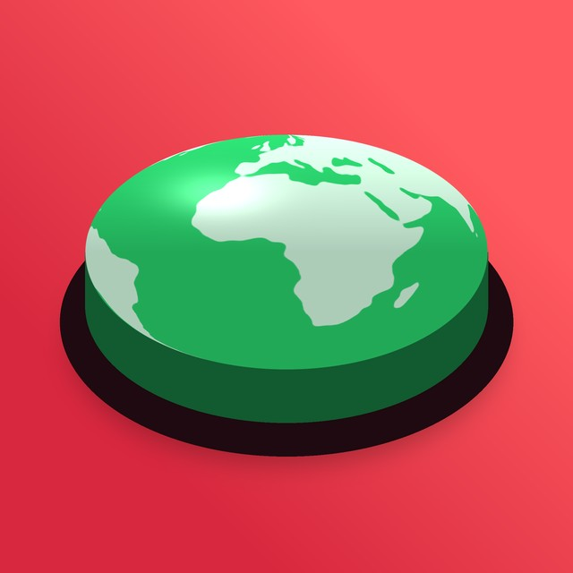
Un gros bouton en forme de monde : appuie, la planète répond.
Douze pistes plus sobres, rendues à partir de la vraie Terre de l'app : vert pour oui, rouge pour non.
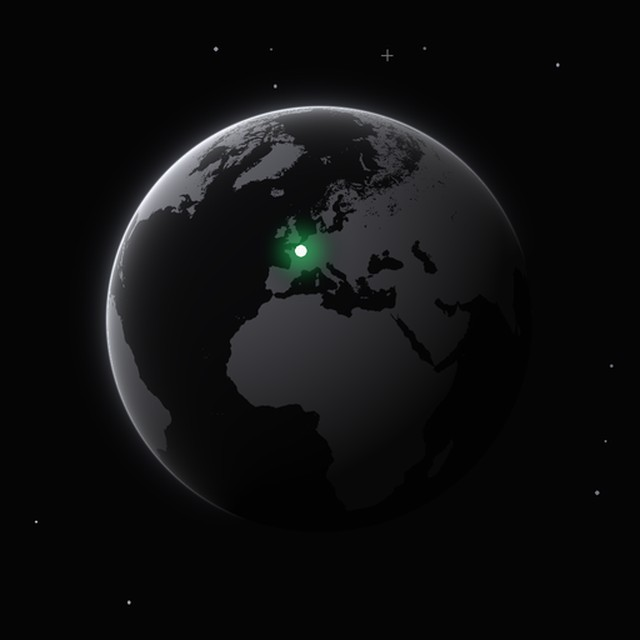
Un seul point vert s'allume sur la Terre : un take vient d'être posé, là.
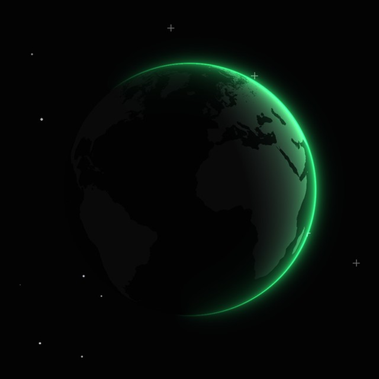
La Terre à contre-jour, seul son bord s'éclaire en vert : le monde qui dit oui.
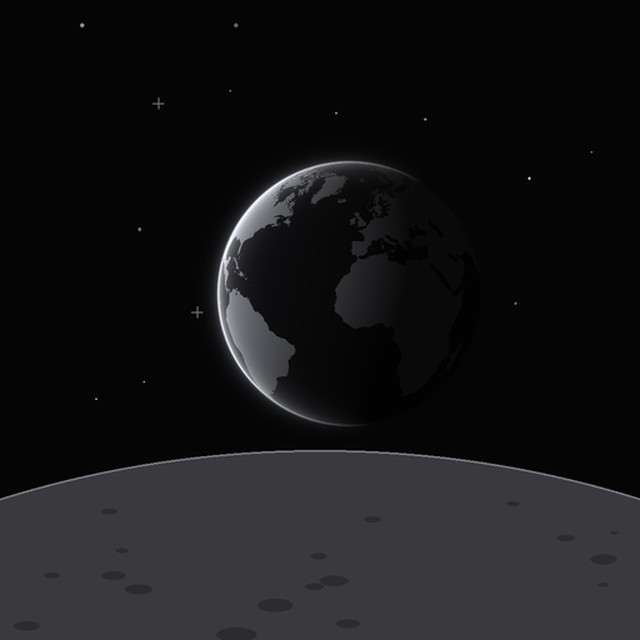
La Terre qui se lève au-dessus de la Lune : le monde vu de loin, en entier.
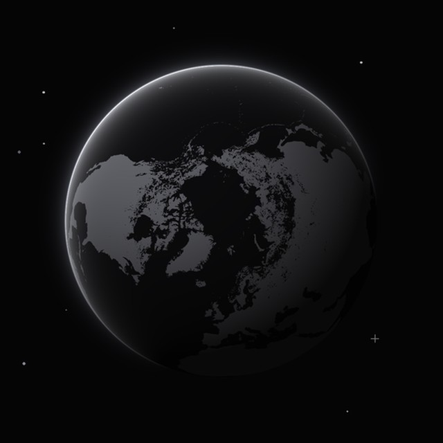
La planète vue d'en haut, tous les continents autour du pôle : personne n'est au centre.
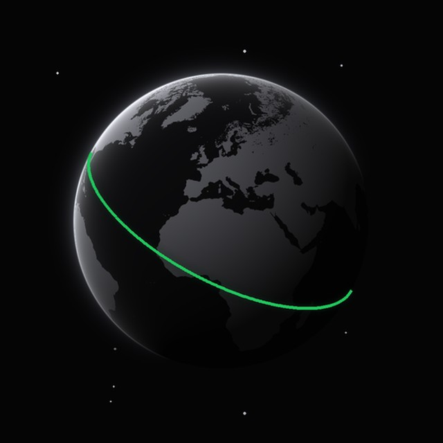
Une ligne verte fait le tour du monde : la question qui traverse la planète.
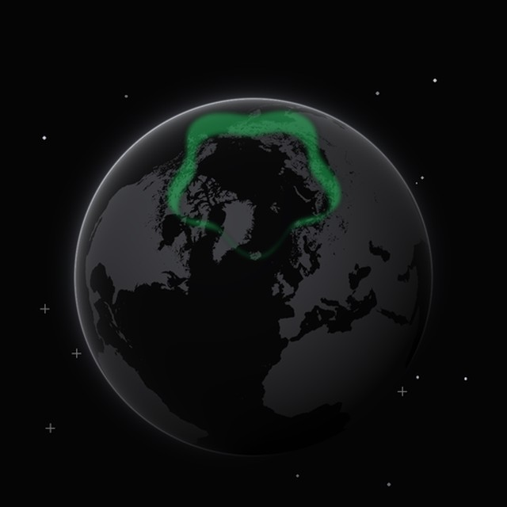
Une aurore verte au-dessus du pôle : la planète qui réagit.
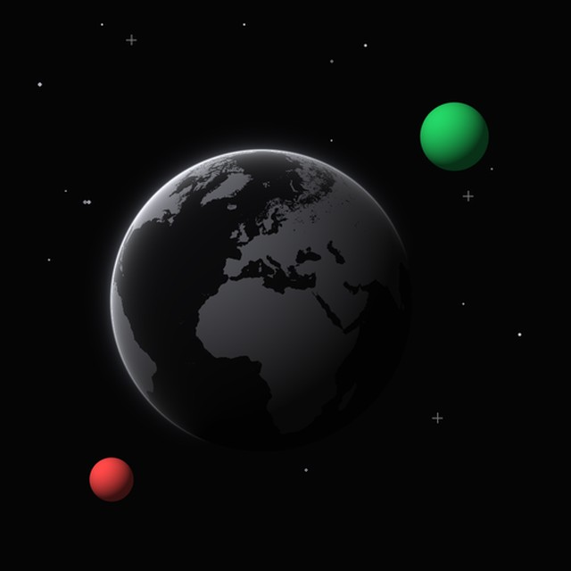
La Terre et ses deux lunes, une verte, une rouge : oui et non tournent autour du monde.
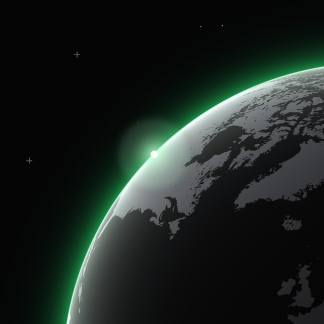
Le soleil qui surgit derrière la Terre, vu depuis l'orbite : l'instant où tout s'allume.
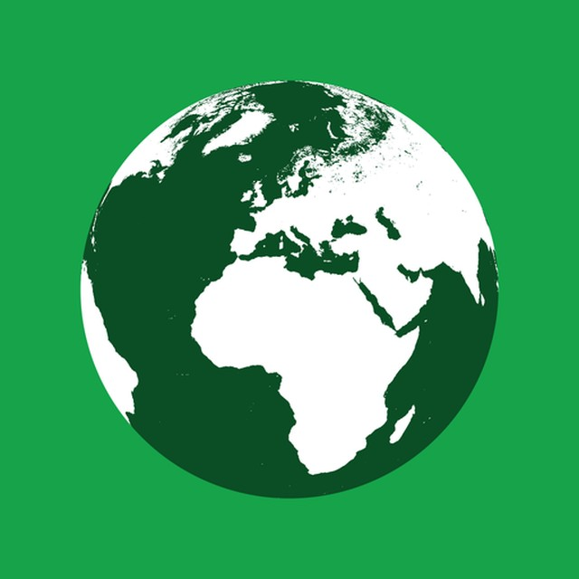
La Terre en deux tons sur le vert du oui. La plus lisible en petit.
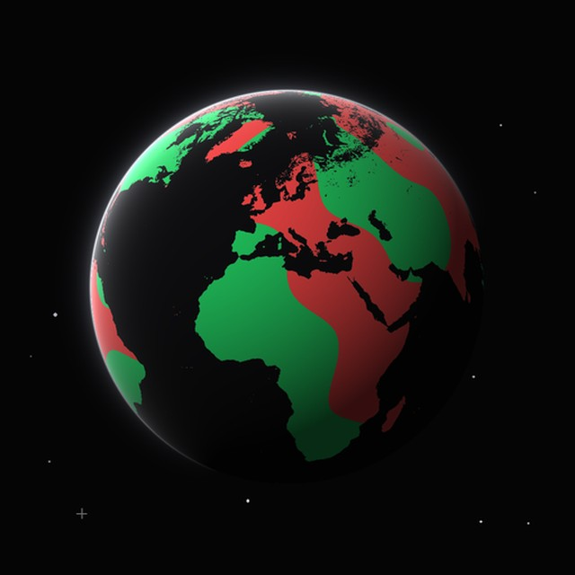
Les continents colorés comme un résultat : chaque région a voté vert ou rouge.
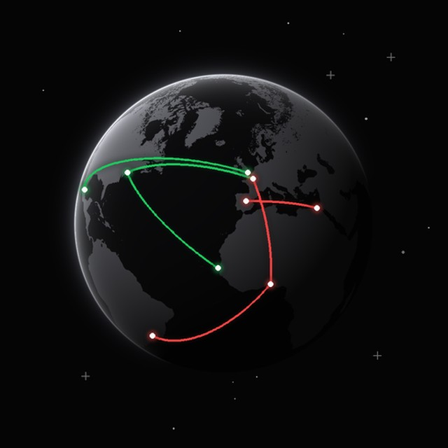
Des arcs vert et rouge relient les villes : les avis voyagent d'un pays à l'autre.
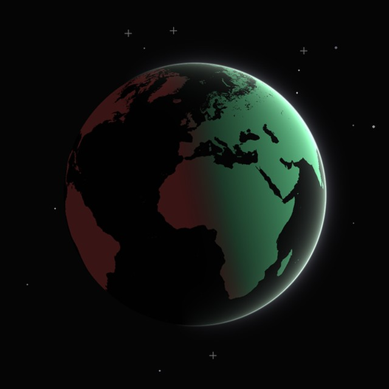
Le jour est vert, la nuit est rouge : la planète tourne entre deux avis.